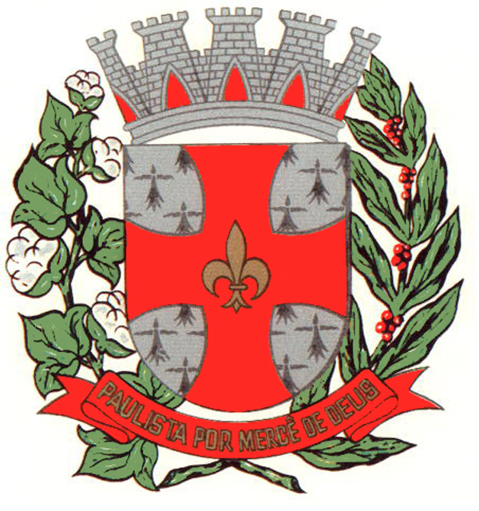
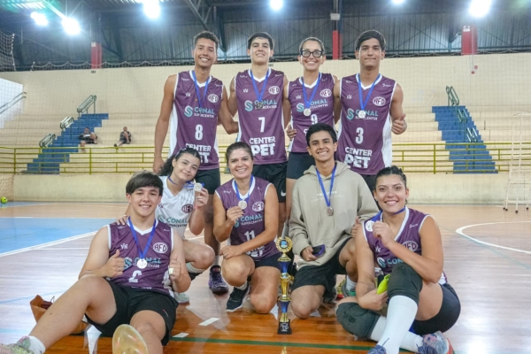
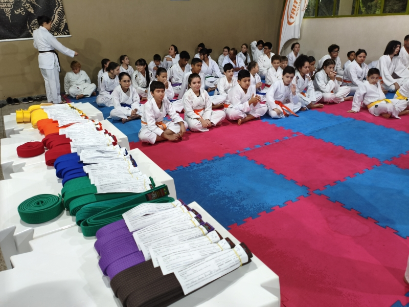
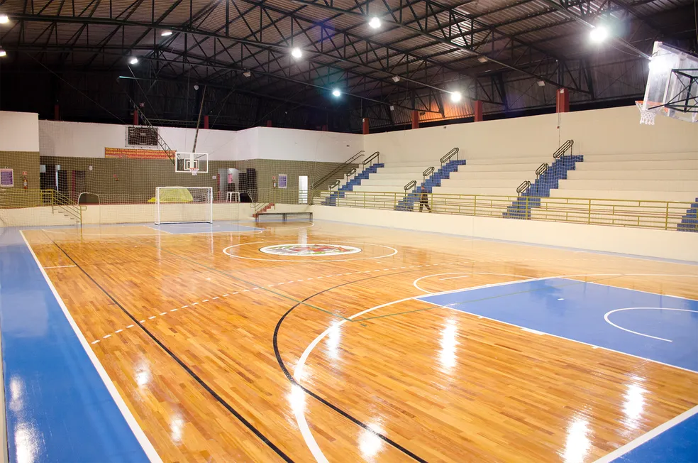
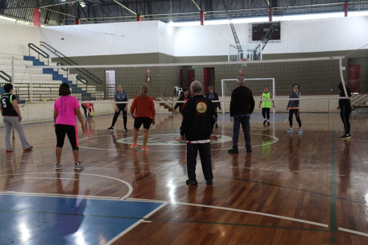
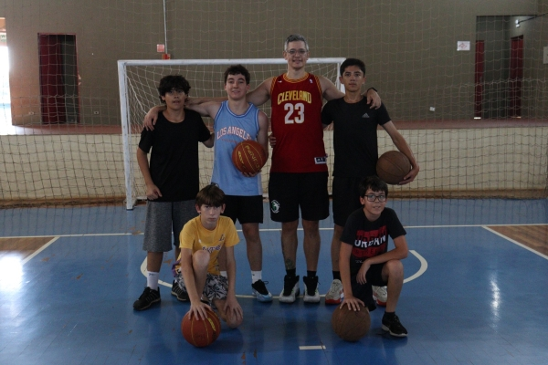
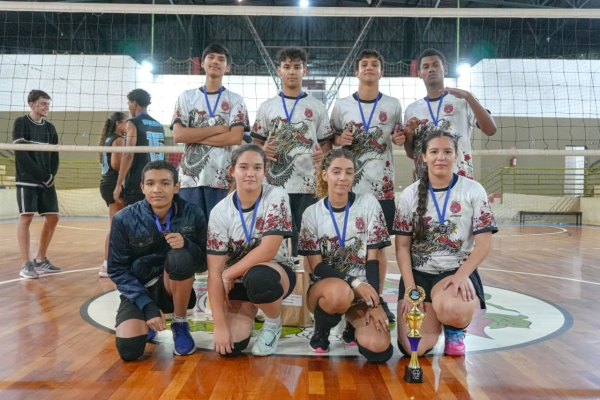
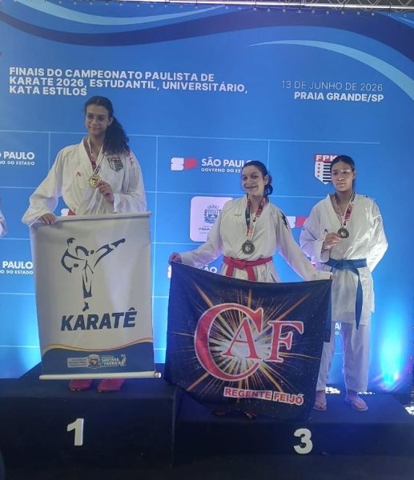

Divisão de Esportes
Coordena as escolinhas esportivas, os campeonatos e os eventos competitivos, incentiva as diversas modalidades (futebol, vôlei, basquete, atletismo e outras) e apoia os atletas do município.

Iniciativa municipal gratuita orientada ao bem-estar, saúde preventiva e formação esportiva.
Atendimento supervisionado por profissionais de Educação Física para todas as faixas etárias.







O Departamento de Esporte e Lazer (DEL) é o setor da Prefeitura de Regente Feijó responsável por incentivar a prática de atividades físicas, o esporte amador e as opções de lazer para a população. Sua missão é usar o esporte e o lazer como ferramentas de inclusão social, saúde pública e qualidade de vida, cuidando dos espaços públicos de recreação e estimulando hábitos saudáveis em todas as faixas etárias.
* Números divulgados pela Prefeitura de Regente Feijó; podem variar ao longo do ano.
Coordena as escolinhas esportivas, os campeonatos e os eventos competitivos, incentiva as diversas modalidades (futebol, vôlei, basquete, atletismo e outras) e apoia os atletas do município.
Unidade voltada ao condicionamento físico orientado e à promoção da saúde, com ginástica, lutas, dança e treinos funcionais para crianças, jovens, adultos e idosos. Conta com espaço kids, supervisionado por uma monitora, para quem precisa de apoio com os filhos pequenos.
O trabalho do DEL é feito em conjunto com a Escola Municipal Therezinha da Rocha Moreno, a APAE e o CAPS, reforçando a inclusão social e o cuidado com a saúde física e mental.
Rua Clemente Pereira, 30
Campo de Bocha e Estádio Municipal “Zé do Prato”, abertos aos munícipes para a prática esportiva.
Os projetos do DEL já revelaram talentos locais. A turma de Karatê do CAF leva atletas de Regente Feijó a competições nacionais, e as equipes de atletismo e de vôlei do município participam de campeonatos regionais, como os Jogos da Juventude. O objetivo é sempre o mesmo: transformar o esporte em saúde, formação cidadã e orgulho para a cidade.
Carta de Serviços oficial (horários completos) Instagram da Prefeitura Facebook da Prefeitura
É o departamento da Prefeitura de Regente Feijó que incentiva a prática de atividades físicas, o esporte amador e o lazer. Ele organiza escolinhas, treinos, campeonatos e eventos, além de cuidar dos espaços públicos esportivos do município.
Sim. As modalidades do DEL são uma iniciativa municipal gratuita, oferecida à população com acompanhamento de profissionais de Educação Física.
Na “Grade de atividades”, escolha a modalidade, toque em “Ver Mais Informações” e depois em “Solicitar Vaga”. Informe seu nome completo, idade, telefone e os horários em que você tem disponibilidade. A equipe do DEL entra em contato pelo telefone informado.
Pode. O DEL atende de segunda a sexta, das 8h às 11h e das 13h às 17h, na Rua José Makari, 23 (Tênis Clube). O telefone é (18) 3279-4430 e o e-mail é esporteregente@hotmail.com.
Há modalidades esportivas e também de lazer, que estimulam o condicionamento físico. Entre elas estão futsal, vôlei, basquete, atletismo, natação, hidroginástica, karatê, boxe, muay thai, capoeira, CrossFit, treino funcional, balé e dança. A lista completa e atualizada está na “Grade de atividades”.
Há atividades para crianças, adolescentes, adultos e idosos. A idade varia conforme a modalidade, e cada uma mostra a sua categoria no card e na tela de informações. Use os filtros por faixa etária para encontrar o que combina com você.
Em diferentes polos da cidade: Tênis Clube (natação, hidroginástica e escola de futebol), CAF no salão do Tênis Clube, Ginásio de Esportes, Estádio Dr. Mário Marcondes dos Reis, Distrito do Espigão e Bairro São Sebastião. O local de cada modalidade aparece na tela de informações.
Na tela de informações de cada modalidade, na seção “Horários”, com os dias da semana e os horários de cada turma. Para consultar a programação oficial completa, a Prefeitura também publica a Carta de Serviços, com o link em “Sobre o DEL”.
O Centro de Atividade Física é a unidade do DEL voltada ao condicionamento físico orientado e à saúde. Funciona no Tênis Clube e oferece mais de 18 modalidades, como funcional, CrossFit, jump, aerodança, balé, karatê, boxe, muay thai e capoeira.
Sim. O CAF conta com um espaço kids, supervisionado por uma monitora, para que pais e mães possam fazer as aulas com tranquilidade.
Sim. O DEL oferece, por exemplo, vôlei adaptado, hidroginástica, treino funcional e jogos de mesa (truco, damas, dominó e buraco) para pessoas com 50 anos ou mais. Procure o filtro “Melhor Idade” na grade de atividades.
Sim. As turmas de treinamento participam de campeonatos regionais, estaduais e nacionais. A turma de Karatê do CAF, por exemplo, revelou atletas que representam Regente Feijó em competições pelo Brasil.
Ligue para (18) 3279-4430, escreva para esporteregente@hotmail.com ou vá até o DEL no horário de atendimento. Você também pode acompanhar as novidades pelo Instagram e pelo Facebook da Prefeitura de Regente Feijó.